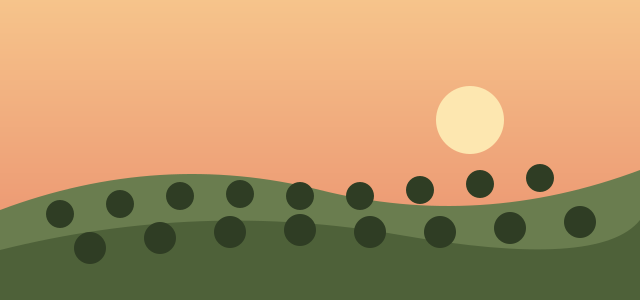

The orchard notes
A short field guide, written to be written on.
Every orchard keeps a quiet ledger of its seasons. The bark remembers the frost, the soil remembers the rain, and the fruit remembers the long afternoons. A careful reader of trees learns to see that ledger in the shape of a branch and the colour of a leaf.
The pomegranate grows in warm valleys where the summers are long and dry. Its leathery skin hides hundreds of seeds, each wrapped in a bright, sour jewel. Growers prune it in late winter, before the first buds break, so the light can reach the middle of the bush.
Light and shade
Fruit trees are patient engines that turn light into sugar. A crowded canopy makes pale, small fruit; an open one makes fruit that colours evenly. Thin the inner branches and keep the strong ones that point outward and up.

The watering log
The log below scrolls on its own. Notes written inside it move with it.
Harvest
Pick in the cool of the morning, when the fruit is firm and the stems snap cleanly. Handle each one as if it were an egg; a bruise today is rot next week. Store apples and pears apart, since one ripens the other.
After the harvest the orchard rests. Rake the fallen leaves, mend the fences, and write down what went well. Next year will ask the same questions, and a good ledger will have the answers.
Write with a pen, or switch on Draw in the bar and use the mouse. Hold Alt to draw with the mouse at any time. Ink is kept in this browser's local storage.